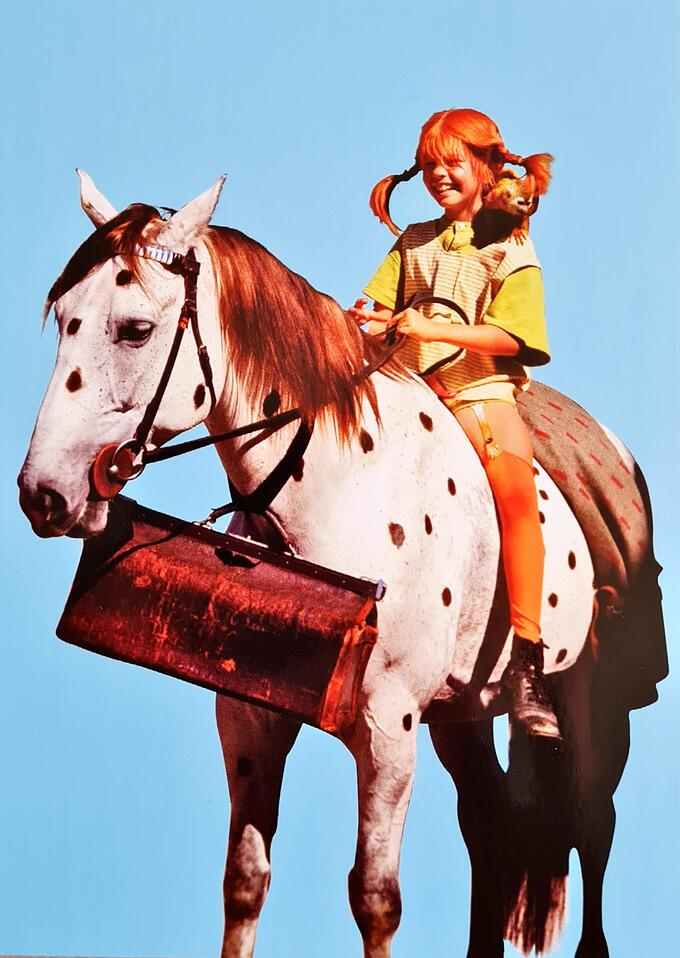
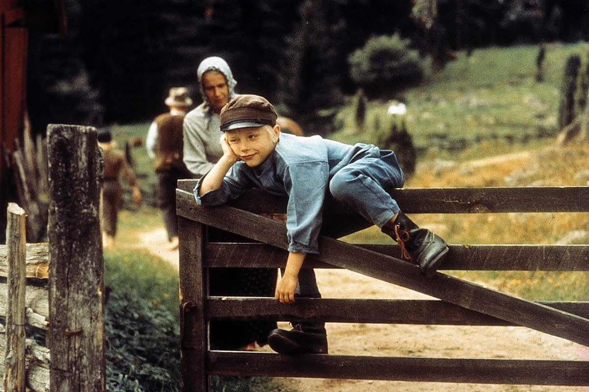
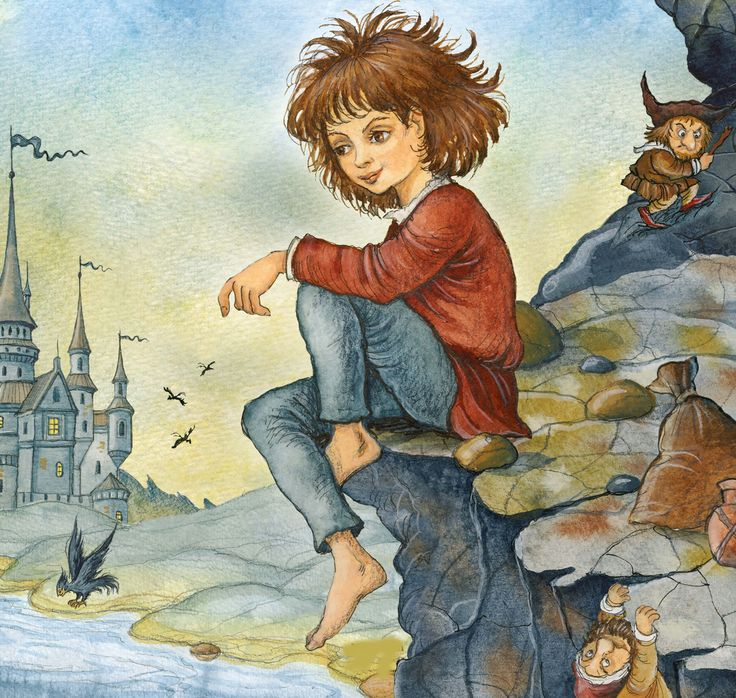
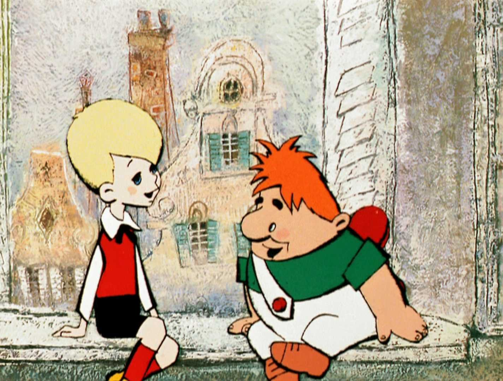
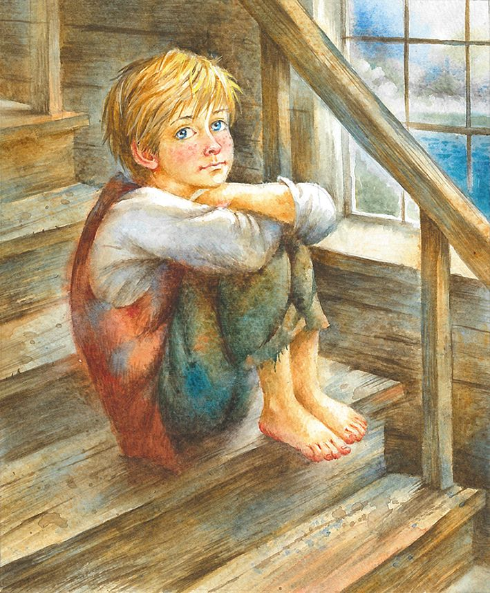

Биография
Астрид Анна Эмилия Линдгрен (в девичестве Эрикссон) (1907–2002) — шведская писательница, автор ряда всемирно известных книг для детей, в том числе трилогии о Малыше и Карлсоне и трилогии про Пеппи Длинный чулок.
После окончания школы уехала в Стокгольм, чтобы найти работу. Сменив несколько должностей (секретарь, стенографистка, редактор), она удачно вышла замуж. Первую сказку — «Пеппи Длинный чулок» — Линдгрен написала в 1944 году. Сказка заняла первое место в литературном конкурсе, что вдохновило Астрид всерьёз заняться писательством.
В 1957 году Линдгрен стала первым детским писателем, получившим от Королевства Швеция медаль за литературные достижения. Ей присуждено множество наград и премий: Международная золотая медаль X. К. Андерсена, премия имени Льюиса Кэрролла и т. д.
Некоторые известные произведения: «Эмиль из Лённеберги», «Малыш и Карлсон», «Дети из Бюллербю», «Пеппи Длинный чулок» и «Рони, дочь разбойника»
Книги

Пеппи Длинный чулок
Пеппи — маленькая рыжая веснушчатая девочка, которая живёт одна на вилле «Курица» в небольшом шведском городке вместе со своими животными: мартышкой Господином Нильсоном и лошадью. Пеппи — дочь капитана Эфраима Длинный чулок, который впоследствии стал вождём чернокожего племени. От своего отца Пеппи унаследовала фантастическую физическую силу, а также чемодан с золотом, позволяющий ей безбедно существовать. Мама Пеппи умерла, когда та была ещё младенцем. Лучшие друзья Пеппи — простые соседские ребята Томми и Анника Сеттергрен. В компании Пеппи они часто попадают в неприятности и смешные переделки, а иногда — в настоящие приключения

Эмиль из Лённеберги
Эми́ль Свенсон — «маленький сорванец и упрямец», весёлый, любопытный и находчивый шестилетний деревенский мальчик, который постоянно попадает в различные комичные переделки. Он очень смекалист и знает, как заработать деньги самому, не прося у родителей.
Среди увлечений мальчика особое место занимает резьба по дереву. Каждый раз, когда Эмиля в наказание за шалости запирают в столярной мастерской, он вырезает по одному деревянному человечку, и общее число таких фигурок со временем переваливает за 300 штук. Любимые вещи Эмиля — «кепарик», который однажды привез ему из города отец, и «ружарик», который смастерил для него Альфред, конюх, рабочий по дому и лучший друг.

Рони, дочь разбойника
Рони — единственная дочь атамана разбойников Маттиса и его супруги Ловисы. Шайка Маттиса живёт в лесной глуши в старом замке, расколотом надвое молнией в ночь рождения девочки. Рони — смелая, добрая и искренняя, гордость отца, любимица всех его подчинённых. Большую часть времени она проводит, бродя по отцовскому замку и его окрестностям. Она счастлива и даже не догадывается о своём одиночестве.
Но однажды девочка случайно обнаруживает, что вторую половину замка заняла конкурирующая шайка атамана Борки. У него тоже есть ребёнок — сын по имени Бирк, отважный, умный и весёлый мальчик, родившийся в одну ночь с Рони. Встреча с ним меняет её жизнь.

Малыш и Карлсон
В Стокгольме в самом обыкновенном доме жила самая обыкновенная семья Свантесонов — папа, мама и трое детей: старший Боссе, средняя Бетан и младший Сванте, которого звали просто Малышом. Однако на крыше этого дома в домике за трубой жило совсем необычное существо по имени Карлсон, которое способно летать благодаря мотору и пропеллеру у него за спиной.
Семилетний Малыш часто скучает в одиночестве старшие сестра и брат не обращают на него внимания. Малыш очень хочет иметь верного друга и мечтает о собаке, однако родители не собираются заводить домашнего питомца.
Жизнь Малыша меняется, когда он знакомится с Карлсоном — маленьким летающим человечком, который однажды залетел к нему в открытое окно.

Расмус-бродяга
Главный герой книги — девятилетний сирота Расмус, который живёт в приюте и мечтает, что его усыновят. Но в семьи забирают в основном кудрявых девочек. Надзирательница обращается с детьми сурово, и жизнь в страхе и без любви становится для Расмуса невыносимой.
Расмус решает сбежать из приюта, чтобы найти себе семью. В дороге он встречает музыканта Оскара. Расмус отправляется в путешествие вместе с ним. Вместе они переживают множество приключений.